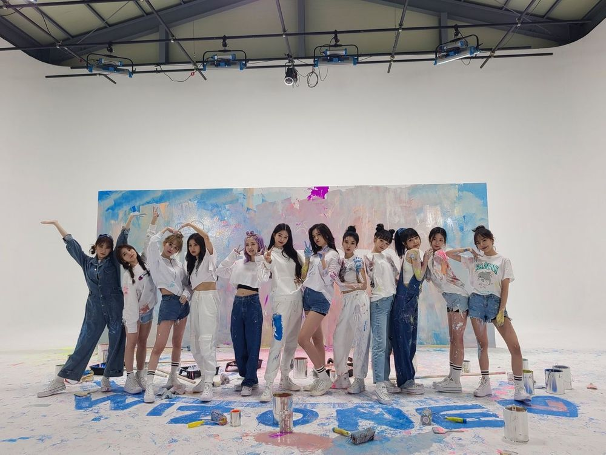

2년반동안 정말 감사했어요
힘들때도 있었지만 위즈원덕분에 행복한 시간을 보낼수 있었어요 너무너무 고마워요😊
그리고 나코메일 봐줘서 고맙고 항상 답장 해줘서 고마웠어요
답장 보면서 웃고 울고 ㅎㅎ
이 메일로 위즈원이랑 대화 하는거 같아서 너무 좋았어요
생각해보니까 항상 재미 없는 얘기만 한거 같은데...ㅋㅋㅋㅋ
괜찮았나요...????😮
근데 질문 받고 영상으로 대답 하는건 진짜 좋았당 ㅎㅎ
메일 봐주는분들한테 받은 질문이라서 더 ㅎㅎ
이렇게 소통을 할수 있는게 또 있으면 그때 또 만나요~!!
앞으로도 열심히 할게요!!
우리 꽃길만 갇자~~
위즈원 정말 지금까지 정말 감사했어요
많이 사랑해요~~💫
2年間半、本当にありがとうございました！
辛い時もWIZ*ONEのお陰で幸せな時間を過ごすことができました。本当にありがとうございます😭
そして、いつもなこめ見てくださって、いつも返信してくださってありがとうございました！
本当に皆さんからの返信で笑顔になれたり、勇気もらえたり、時には感動して泣いたりもしました😢
こうやってメールを通してWIZ*ONEの皆さんと心が繋がれた気がしてすごく嬉しかったです。
いつも面白くない話ばっかりしちゃってごめんね…😭笑
それなのにいつもひとつひとつ見てくれて返信まで…😭感謝でしかないです。。
あと、メールの返信でQ&Aできたのは本当によかったなって思う！
メール見てくださる方からの質問だったからもっと！！
こうやってお話しする場所がまたできたら、その時はまた来てね。
これからも一生懸命頑張ります！
ずっと見守っててください。
今まで本当にありがとうございました。
本当に本当に大好きです♡
